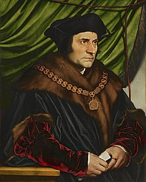

Томас Мор
Сэр То́мас (Фома́) Мор (англ. Sir Thomas More; возможно 7 февраля 1478[1], возможно Лондон — 6 июля 1535[1], Тауэр-Хилл) — английский юрист, государственный деятель, философ и писатель-гуманист. Лорд-канцлер Англии (1529—1532). В 1516 году написал книгу «Утопия», в которой показал своё понимание наилучшей системы общественного устройства на примере вымышленного островного государства.
Мор видел в Реформации угрозу для церкви и общества, критиковал религиозные взгляды Мартина Лютера и Уильяма Тиндейла и, находясь на посту лорд-канцлера, препятствовал распространению протестантизма на территории Англии. Отказался признавать Генриха VIII главой церкви Англии и считал его развод с Екатериной Арагонской недействительным. В 1535 году был казнён в соответствии с Актом об измене. В 1935 году причислен к лику святых Католической церкви.
Биография